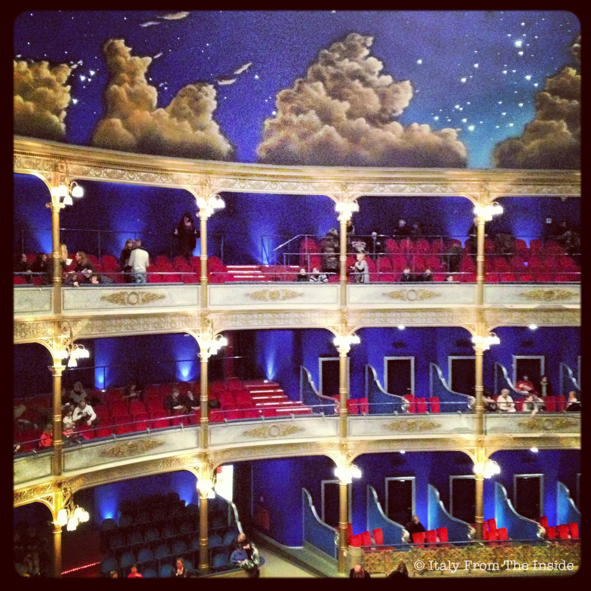

All historical theaters are fascinating, but for me the Teatro Rossetti is topping the list. Founded in 1954 in a 1878 building, today it is considered one of the most important Italian theaters. The galleria shines with its gold, red and bright blue decorations, while the ceiling features a starry sky spotted here and there by chubby clouds. One more reason to go to theater.